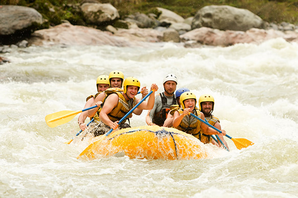
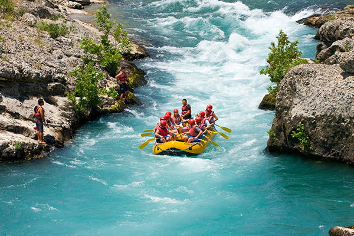
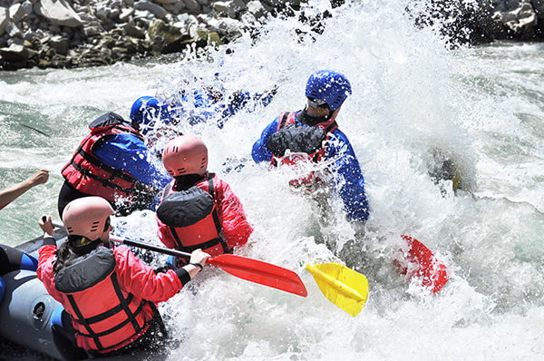
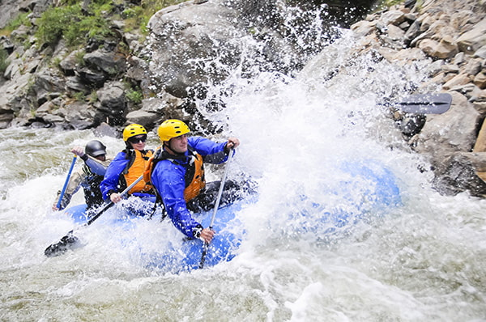
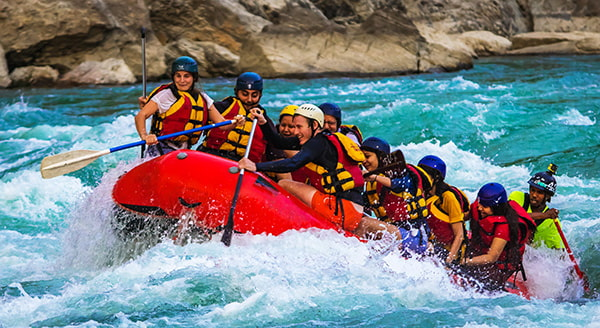
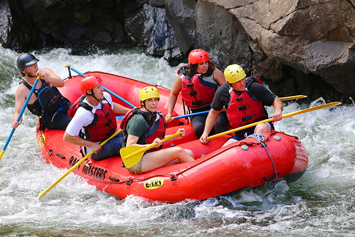

Nossa missão é proporcionar a melhor e mais segura experiência de rafting em corredeiras, conectando pessoas à natureza com muita adrenalina, profissionalismo e respeito ao meio ambiente. Sinta a força das águas e supere seus limites conosco!

Nossa missão é proporcionar a melhor e mais segura experiência de rafting em corredeiras, conectando pessoas à natureza com muita adrenalina, profissionalismo e respeito ao meio ambiente. Sinta a força das águas e supere seus limites conosco!
Fundada por entusiastas do esporte radical, a Duck! Rafting começou suas atividades com o objetivo de desbravar as corredeiras mais desafiadoras. Ao longo dos anos, nos tornamos referência em turismo de aventura, garantindo equipamentos de ponta e guias certificados para todas as idades.





